Body - Tapping/Clicking/Ticking Noise at Windshield Area
TECHNICALBulletin No.: 08-08-48-003G
Date: January 28, 2013
Subject: Tapping, Clicking or Ticking Noise at Windshield Area (R&R Right and Left Windshield Side Reveal Moldings to Add Double Sided Tape)
Models:
2007-2013 Cadillac Escalade Models
2007-2013 Chevrolet Avalanche, Silverado, Suburban, Tahoe
2007-2013 GMC Sierra Models, Yukon Models
Supercede:
This bulletin is being revised to add the 2013 model year. Please discard Corporate Bulletin Number 08-08-48-003F (Section 08 - Body and Accessories).
Condition
Some customers may comment on hearing a tapping, clicking or ticking noise at the windshield area. This condition occurs more frequently while driving at highway speeds and could be exaggerated on vehicles with front bug guard deflectors.
Cause
This condition may be caused by air/wind causing the windshield side reveal moldings to move, generating a noise.
Correction
Remove both windshield reveal moldings, add double-sided tape and re-install the moldings following the steps below:
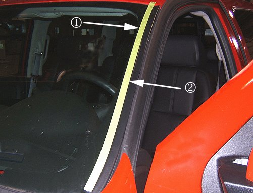
1. Using tape (1) or a grease pencil, mark the position of the inboard edge (2) of both left and right reveal moldings onto the windshield, following the contour of the molding.
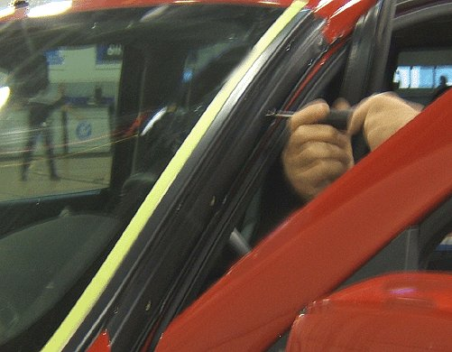
2. Remove the left and right windshield side reveal moldings. Refer to Windshield Side Reveal Molding Replacement in SI.
3. Being careful not to affect the tape or grease pencil marks, clean and prep the glass at the seal interface with Glass Adhesion Promoter, P/N 12378555 (in Canada, use 88901239).
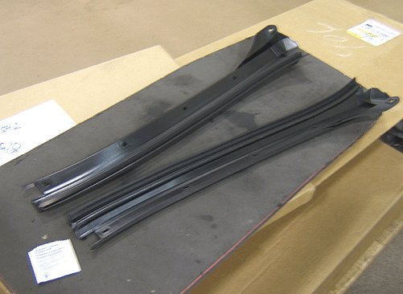
4. Apply 3M Automotive Adhesion Promoter 06396, or equivalent, to the underside of the reveal molding seals.
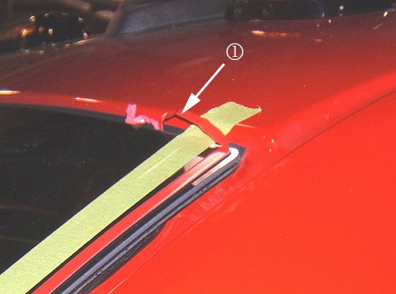
Tip
An approximate 600 mm (24 in) length of tape should allow for overlap at the top to be trimmed back leaving a tail of release liner (1) and, at minimum, should reach the fender cut line at the bottom.
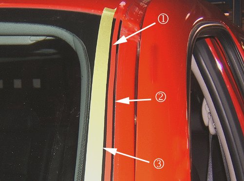
5. Apply a 600 mm (24 in) length of 3M Automotive Acrylic Plus Attachment Tape 06386 (1.14 mm (0.045 in) thick x 6.35 mm (0.25 in) wide), or equivalent, to both sides of the windshield. Ensure the tape (1) position is centered between the windshield edge (2) and the tape/grease pencil line (3). Do not remove the release lining from the tape yet.
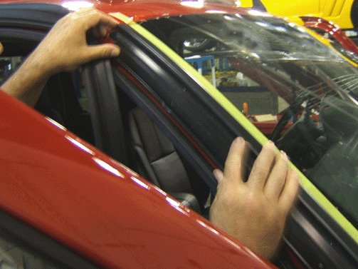
6. Reinstall the reveal molding to one side by sliding the molding downward and ensuring that the top lip is engaged at the upper edge of the windshield.
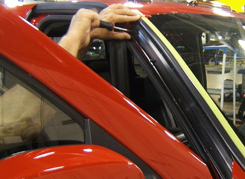
7. Install the fasteners to the reveal molding, starting from the top. Refer to Windshield Side Reveal Molding Replacement in SI.
8. Lifting the top edge of the reveal molding, grab the tail of the release lining and pull downward removing the lining.
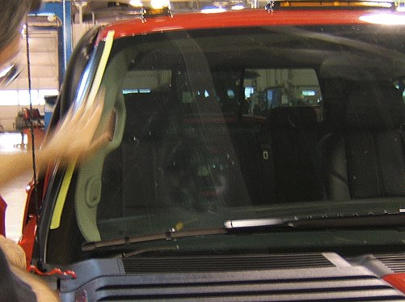
9. Press or roll the reveal molding against the windshield ensuring adhesion of the tape to the glass.
10. Repeat steps 6-9 on the opposite side.
11. Remove tape or clean the grease pencil marks from the windshield.
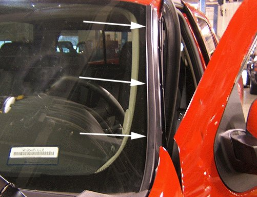
12. If positioned correctly, trimming of the double sided tape should not be necessary, however inspect the reveal moldings for any tape not covered and trim off any exposed tape.
Important
After taping the windshield reveal moldings, avoid washing the vehicle as well as excessive contact with the windshield reveal moldings for a minimum of 72 hours.
Parts Information
3M(TM) products may be purchased through your local distributor. Information about 3M product retailers in your area may be obtained by calling 1-866-364-3577 (U.S. and Canada).
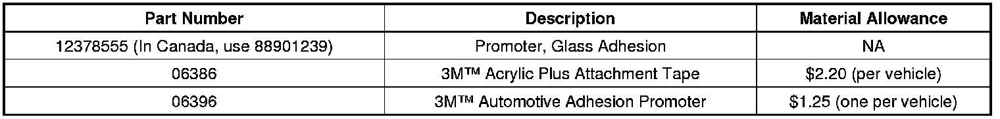
Warranty Information
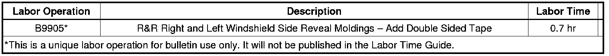
For vehicles repaired under warranty, use.

Disclaimer